브라우저 안에서 OCR과 주문 처리
사진을 브라우저에서 축소한 후 Tesseract.js로 인식하고 주문 데이터를 localStorage에 저장합니다. 별도 앱 서버 없이 구성할 수 있지만 브라우저 저장 한도와 기기별 OCR 처리 비용을 고려해야 합니다.
Web Tool / PWA
식사·카페 주문과 인원별 예산을 정리하는 PWA입니다. 메뉴 사진 OCR, 주문 편집, 예산 계산과 브라우저 저장을 연결했습니다.
Architecture / Flow

여러 사람의 메뉴 선택과 주문, 인원별 예산을 한 번에 정리하는 일을 돕고자 했습니다. 메뉴를 가져오는 단계부터 주문 내역을 편집하고 계산하는 흐름을 하나의 도구로 구성했습니다.
Tesseract.js로 메뉴 사진의 문자를 인식하도록 구현했습니다. 사진을 선택하면 인식을 시작하고, 큰 이미지는 축소해 OCR 처리에 전달하도록 구성했습니다.
식사 예산 계산, 카페 메뉴와 주문 편집 기능을 구현했습니다. 브라우저 로컬 저장을 사용해 메뉴·주문 데이터를 다루는 작은 PWA로 만들었습니다.
OCR 진행 상태와 오류, 시간 초과를 안내하도록 구성했습니다. 사용자가 처리 중인 상태를 이해하고 다음 입력이나 수정으로 이어갈 수 있도록 화면의 피드백을 다뤘습니다.
Follow the data
이미지를 선택하면 FileReader와 Canvas로 최대 1600px JPEG를 만들고 저장 후 자동으로 OCR을 시작합니다.
kor+eng 인식을 수행하고 각 줄의 이름·가격 후보를 화면에 표시합니다. 진행·오류·시간 초과 메시지도 표시합니다.
사용자가 후보를 추가하거나 직접 메뉴를 편집하면 저장과 예산 요약을 갱신합니다.
localStorage에서 상태를 복원하고, 카페 주문은 Clipboard API로 복사하며 실패 시 텍스트를 alert로 표시합니다.
Engineering decisions
사진을 브라우저에서 축소한 후 Tesseract.js로 인식하고 주문 데이터를 localStorage에 저장합니다. 별도 앱 서버 없이 구성할 수 있지만 브라우저 저장 한도와 기기별 OCR 처리 비용을 고려해야 합니다.
인식된 줄과 가격 후보를 보여주고 사용자가 추가·수정하도록 구성했습니다. 자동 확정의 오류 영향을 줄일 수 있지만 최종 메뉴·가격은 사용자의 확인이 필요합니다.
Service Worker가 앱 shell을 선캐싱하고 network-first로 요청합니다. 접속 시 새 버전을 받기 쉽지만 오프라인 OCR까지 보장하는 구조는 아닙니다. CDN·언어 리소스의 최초 로딩 상태에 영향을 받습니다.
코드 기준 e2672c9 · 구조와 주요 실행 경로를 정적으로 검토했습니다.